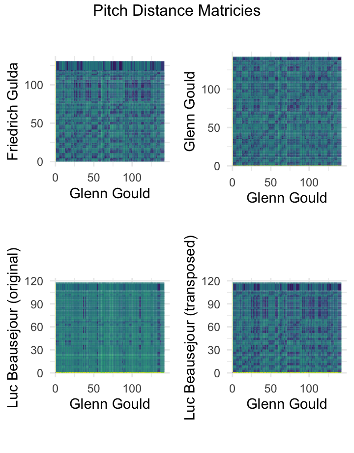
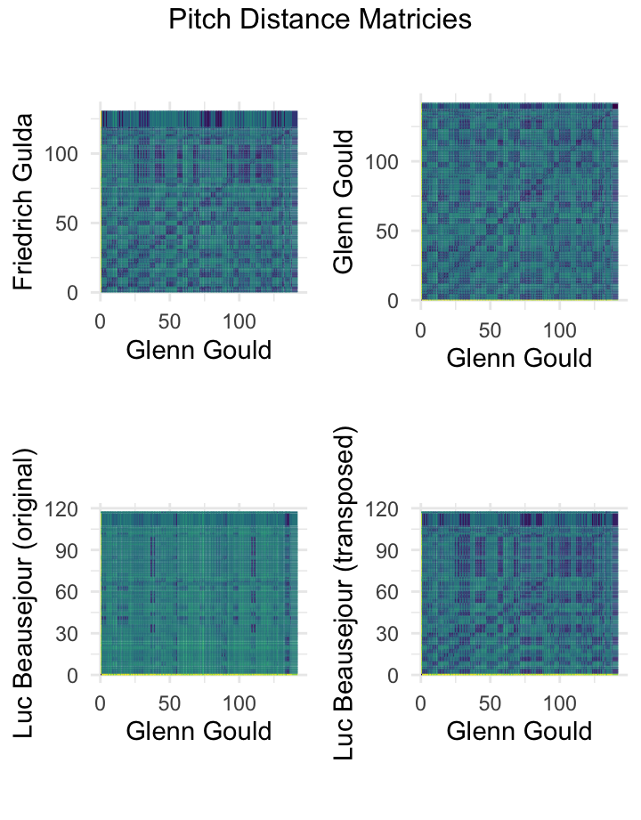
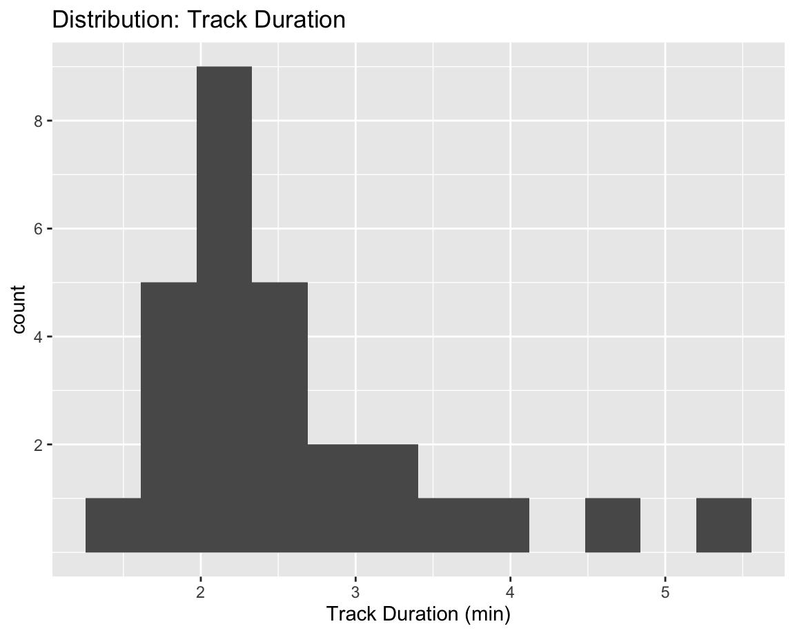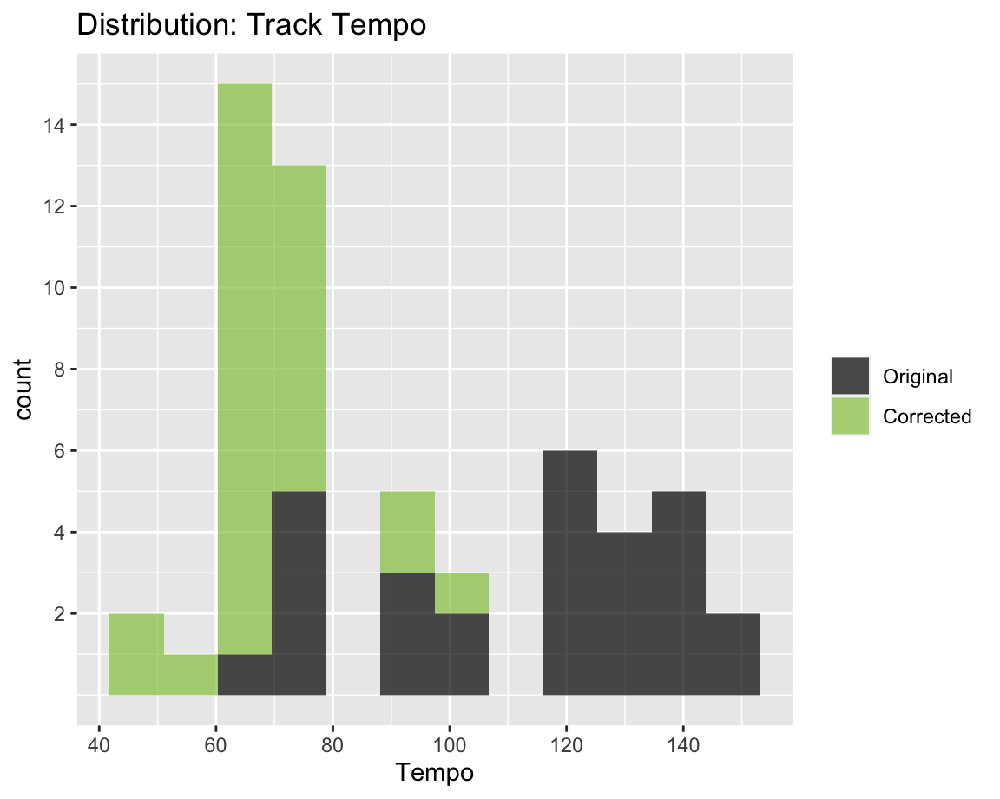
Comparing raw track feature extractions from Spotify yielded the following histograms for duration and tempo.
Given that most of the musicians are playing the exact same piece of music, there are several expectations. First, the track duration should vary inversely and linearly with tempo. There are a fixed number of notes, and when they are played through more quickly, then the track duration should be shorter. But the distributions (using the same number of bins) look different for Track Duration and Tempo. Duration appears gaussian, with three explainable outliers. Tempo however, is a bimodal mess.
A quick survey of the corpus shows that the harp and one other recording (less than 90 seconds duration) are clearly the fastest performances. Using this information, I presume that any tempo faster than the harp (bpm > 95) is actually the eighth-note tempo, if its duration is longer than 90 seconds. So I divide by two to “unwrap” the tempo:
Re-evaluation shows a much more convincing distribution for tempo!
Now that the tempo for the tracks is more-or-less calculated correctly and looking proper, the recording labeled Axel Gillison is quite interesting! Listen yields a few interesting observations. Firstly, it is note-per-note a performance of the original piece, except for the fact that it is extraordinarily slow! Also, it’s in a lower key!
It appears that the creator of this Axel Gillison recording have done a few tricks! First of all, the Axel Gillison “wrapped” tempo is still twice the true tempo! The correct tempo is likely 32bpm. This would put our recording in line with our Tempo vs Duration curve. If we assume that this recording was produced using a sampling rate change (think of slowing down a record player) to change the tempo, we could correct the tempo back to C-major. The frequency ratio between C and A is 19:16—a minor third. If we change the sampling rate by this ratio, we would end up with a tempo of 38bpm. This is still roughly half of our median tempo of 68bpm. So, it would appear that some other kind of fancy resampling has been done to yield such a slow tempo.
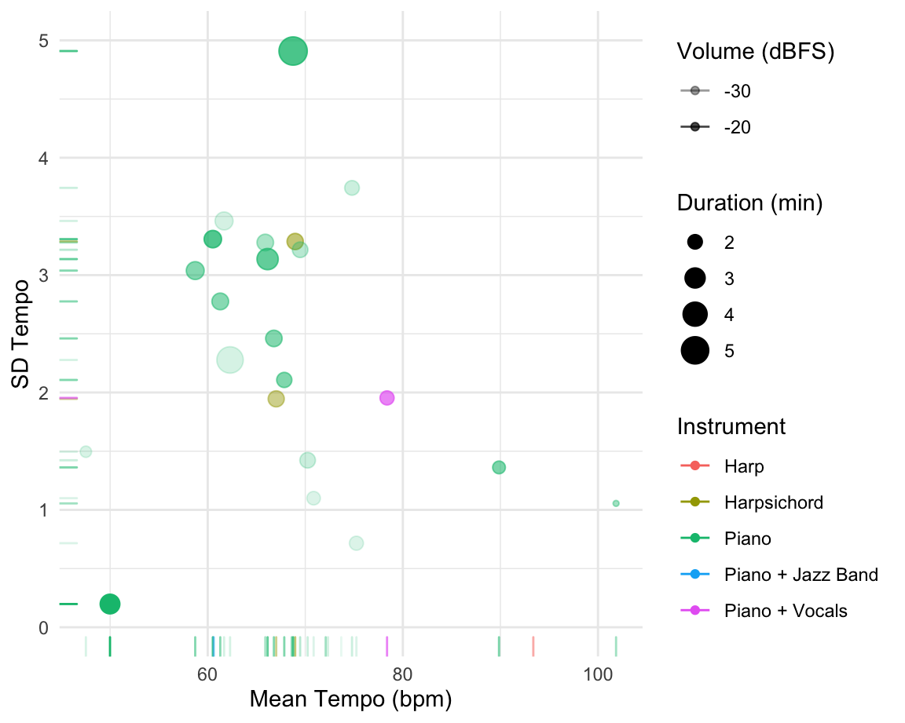
This plot shows a multi-dimensional analysis of many track-level features of this playlist. The purple point is suspicious! This is the recording that has the “vocals” added on top. The vocals sound a bit fake; the standard deviation of the tempo is so low that it seems like the entire track might be synthesized!
The jazz band has the largest tempo variation throughout the track.
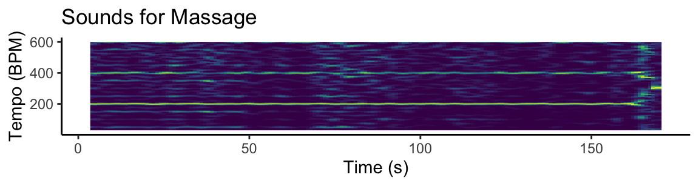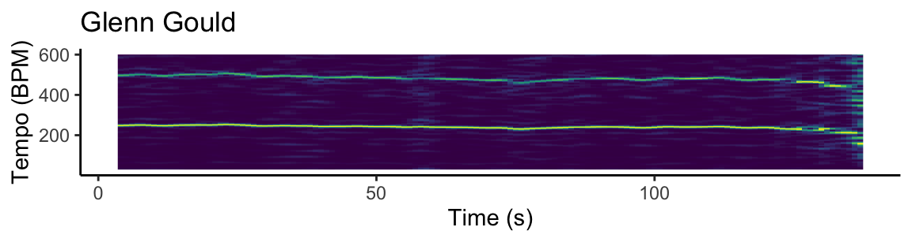
These three “tempograms” show the frequency of novel events events in three recordings from the corpus. These tempogram are clearly showing the sixteenth-note tempo. Since the C-major prelude consists of only sixteenth notes, this makes sense that we see a very clean tempogram for the first two. First, the sounds for massage seems to confirm suspicions that this is computer generated. The tempo is completely consistent across the entire song. Glenn Gould, despite being one of the most consistent Bach performers of all time, has a noticeable tempo dip around 80 seconds.
Finally, the Jazz recording by Jacques Loussier is most interesting. In this recording, we see a clear and abrupt tempo shift around the two-minute mark when the jazz gets unleashed. Towards the end when the band returns to the original Bach music, we can see that the tempo is not the original one, even though it feels that way to us as lsiteners. Amusingly, this is a tempo-analogue to sonata form where the original theme returns, but in a different key, here, it returns, in a different tempo.
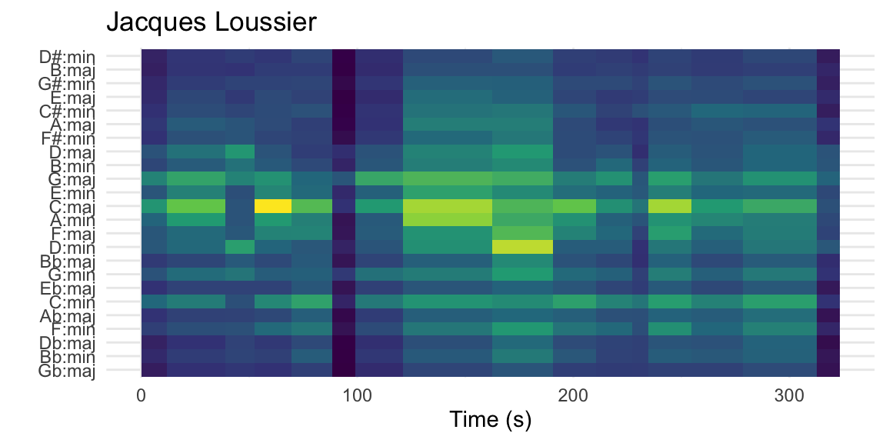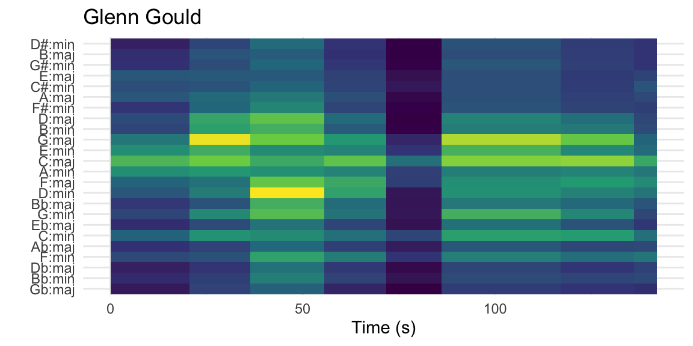
Here, pitch-distance vectors are masked over sections of music to estimate key areas of pieces. Glenn Gould’s recording (bottom) is representative of the original piece of music, while the top is Jacque Loussier’s jazz rendition. Bright spots indicate a good match for the indicated key on the left.
The two recordings share the same key signature (pun intended) for the first bit of the piece, where they clearly modulate from C major to d minor, and back. But then the jazz recording gets more exciting. It seems that Jacques Loussier has leaned into this C-D major modulation and uses it again in the Jazz section. Much of the jazz piece is only loosely tied to the C-major key area.
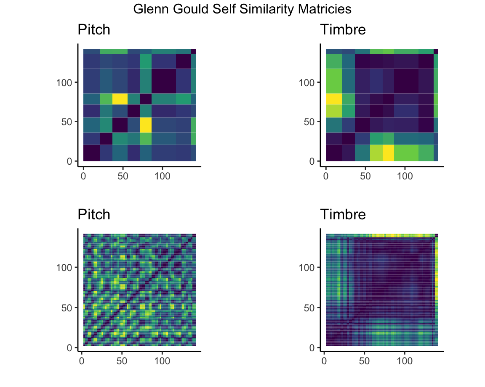
Here are four self-similarity matricies which compare a the characteristics of a moment in a musical piece with another moment in the same piece. A dark segment indicates that the two moments are very similar while bright colors indicate large contrast. The difference between the two matricies of the same type is the window size.
A bright line runs approximately halfway through the piece. This indicates that the pitch content of this spot is quite different from that of the rest of the piece.
And indeed, Spotify thinks that this moment is the most interesting and defining part of the piece. It’s what is played when the track is selected in a preview.
Meanwhile, the timbre self-similarity matrix seems to be most sensitive to notes below A3. This highlights a large difference when the bass line descends and becomes well pronounced pronounced.
A look at the pitch self-similarity matricies don’t reveal much information about musical form, other than there being a harmonically distant section in the middle.
Here is a cepstrogram showing different timbre-elements of this recording by Jacques Loussier. A cepstrogram shows the energy content contained in various timbre characteristics; a bright line indicates the presence of that timbre element. There is an abrupt timbre change around 120s, from what is mostly just c02, to a much more complicated timbre sound, only to have it return to the original sound at the very end. A listening reveals that a drumset enters at that point! It exits just before the end, allowing the traditional ending.
Here are four chromagrams of different recordings of this piece. The chromagram is indicating the presence of various pitches across time. Visually, they have the same signature despite different tempi and x axes. By looking closely, dark space is in between the notes on Gould’s stoccato playing when compared to Gulda. Pre-track silence is visible on Kempf’s recording.
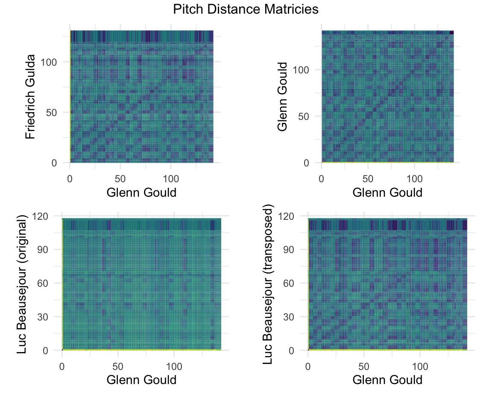
Here are pitch distance similarity matricies. A dark spot indicates that the pitch content of the two pieces under comparison is very similar, while brighter color means that the spots are more contrasting.
The left plot compares the harmonic content between Glenn Gould and Friedrich Gulda.
The right plot is a self-similarity matrix comparing Glenn Gould’s performance to his own.
Despite two different tempi for the performance, the two plots are nearly identical. Gulda has a long time after the final note and both performers keep a very steady tempo and do not deviate, as seen by a perfectly straight diagonal line from the origin.
Here are three chromagrams showing pitch content of three recordings in broad strokes. Each instrument/recording has a different tuning.
Glenn Gould: Piano reference, Glenn Gould is playing a Steinway piano tuned with A ~ 440hz.
Trevor Pinnock: Harpsichord. This luxurious 2020 recording was created using a non quite equal-temperement tuning with a pitch for A that is clearly lower than 440Hz. Here in the chromagram, Spotify’s pitch detection is unhappy with it. You can see that the pitch class of F seems to contain the bins of Gould’s E and F combined.
Luc Beausejour: Harpsichord. This 2007 recording uses a tuning that seems approximately one semi-tone flat (A ~ 415Hz). This is common for baroque recordings. Here, the Spotify chromagram looks quite simlar to Glenn Gould’s, except that each row is shifted, indicating that Gould’s C is Beausejour’s B.
Two of the tracks are recordings of a harpsichord; they are by Trevor Pinnock and Luc Beauséjour.
To my ears, these performances are quite similar. The tunings are slightly different, as are the performance styles. But in general, they are quite similar. The microphone and audio mixing techniques of the Pinnock recording seem more luxurious to my ears, but I cannot think of any other dissimilarities.
A track on the album Sounds for Massages which contains the piece performed on piano, with a synthesized vocal track of “aah” placed on top.
The Spotify API definition of acousticness: A confidence measure from 0.0 to 1.0 of whether the track is acoustic. 1.0 represents high confidence the track is acoustic.
Instrumentalness predicts whether a track contains no vocals. “Ooh” and “aah” sounds are treated as instrumental in this context. Rap or spoken word tracks are clearly “vocal”. The closer the instrumentalness value is to 1.0, the greater likelihood the track contains no vocal content. Values above 0.5 are intended to represent instrumental tracks, but confidence is higher as the value approaches 1.0.
Questions
Why does the SpotifyAPI think that Trevor Pinnock’s recording has vocals?! A score of 0.1 means that the API is quite certain that the there is vocal content. It’s clear that Harpsichords have a rich harmonic content. Is it because of fancy microphone techniques that the low strings of his harpsichord resonate in a way different than that of Beauséjour’s? Moreover, one would think that deliberately inserting an “aah” sound on top of the recording would tank the score, if that is what the algorithm is looking for! But it’s clear that the massage recording is within the distribution of piano-only recordings.
The acousticness metric is quite more vague in the Spotify API, but it seems to be more related to spectral content. Distortion of an electric guitar is caused my compression. This distrotion is what gives gives electric guitar its signature bright sound. It makes sense that harpsichord sounds more similar to electric guitar than the felt tips of a piano.
This playlist contains tracks of the same piece of music: The C-major prelude (BWV 846) from Bach’s Well Tempered Clavier, Book 1.
This playlist contains 28 tracks. 25 of the tracks are of musicians playing exactly the same piece of sheet music (ie: they are trying to play exactly the same notes).
The exceptions include:
1. The Bach Eternal recording-labeled “Harp”, in which the artist repeated the entire piece, but up an octave.
2. The recording by Sir Andras Schiff which includes the fugue performed after the prelude
3. The Jazz Arrangement by Jacques Loussier, which is labeled “Jazz Arrangement”
This turned out to be a wonderful introduction to data science, R, the tidyverse, Spotify APIs, and data science in general. I’ll walk you through my amusing findings.
Downloading raw track feature extractions from Spotify yielded the following histograms for tempo and duration.